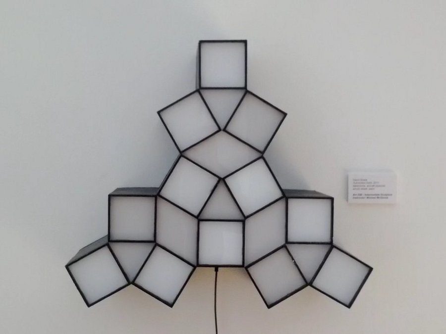
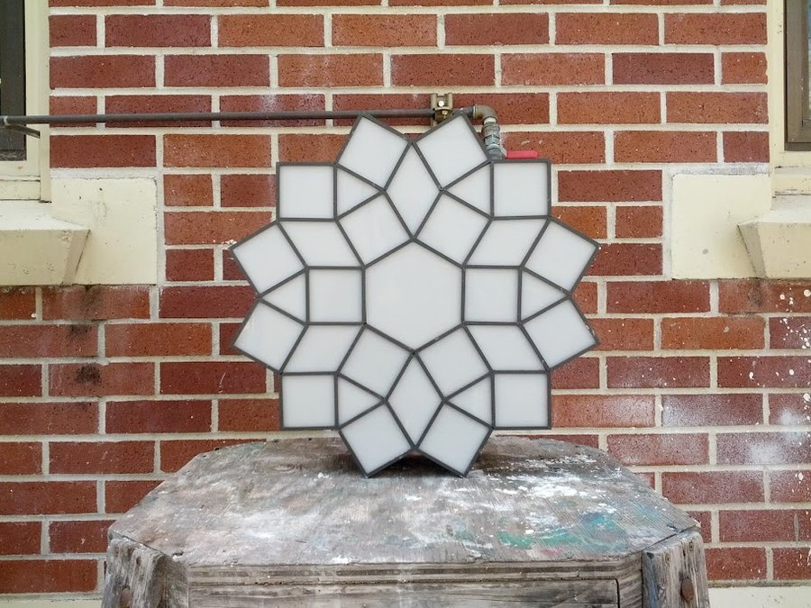
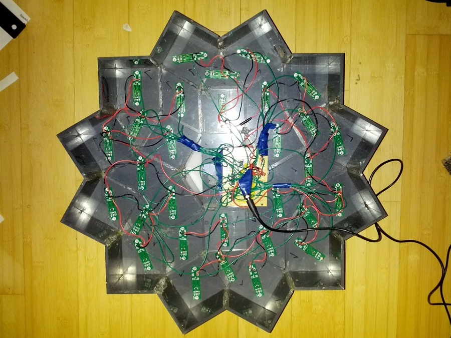

In the summer of 2011 after playing around with cellular automata and their implementations I had the idea to start building some sculptures based on the concept. In the fall of that year I signed up for the intermediate sculpture class at the local community college with an instructor I took a introductory class from a year or so prior. He was incredibly helpful both in teaching me how to use the tools needed to complete the pieces and by encouraging me to keep working when thing seemed hopeless and his work really deserves to be looked at too .
I could make up all sorts of fluff about the meaning behind this project but really I just find cellular automata interesting and wanted to explore what happened when I took them off the regular square grid so commonly used. The parts needed to build this were actually pretty basic (at its most basic it is pretty much just an ATtiny85V, some shift registers, and some LEDs) but I ended up designing a circuit board for the LEDs to allow for more control over how the lights change between states. The boards I ended up using I designed in KiCAD and ordered through BatchPCB; the boards are simply ATtiny4 microcontrollers with three of their outputs hooked up to the legs of a 7.6mm² LED to allow for RGB output. The schematics and code I'm using for these boards can be found here .
The parts needed for the main board are quite simple:
- (1) ATtiny85
- Some number of 74HC595 shift registers. Enough for all the desired outputs.
In addition to the main board you'll probably want something doing something based on the state of each cell. Each pin on the shift registers represents one cell's state; a high pin means "alive" and a low pin means "dead." For this project I'm currently just using the LED controller boards I described earlier to fade between two colors based on the state. The ATtiny4 has one pin attached to a shift register output and that handles the fading based on the pin state. If you want to build some of these boards you'll need to order them from someplace like BatchPCB and also get the parts needed. As an example my Automaton 0x01 project uses Bivar Blue/Green LEDs with a 160° viewing angle and the part list for each board is as follows:
- (1) ATtiny4 in SOT23_6 package
- (2) 68Ω resistors in 1206 package
- (1) Bivar Blue/Green 160° viewing angle LED (Part Number R50BG2-F-0160)
Once all the boards are built all that's left is to wire everything up. The way I did it was to use a 5V 2A switching power supply and wire the main board and all the controller boards to a that. I separated the controller boards into groups and daisy-chained the power and ground of each group together. The grouping was to ensure that the LEDs didn't pull too much current through one wire. After all the power and ground connections were made I just connected each shift register pin to its corresponding LED controller board's input and it was ready to go (you'll want to flash the firmware for the microcontrollers if you haven't of course).
Automaton 0x00

Automaton 0x01

